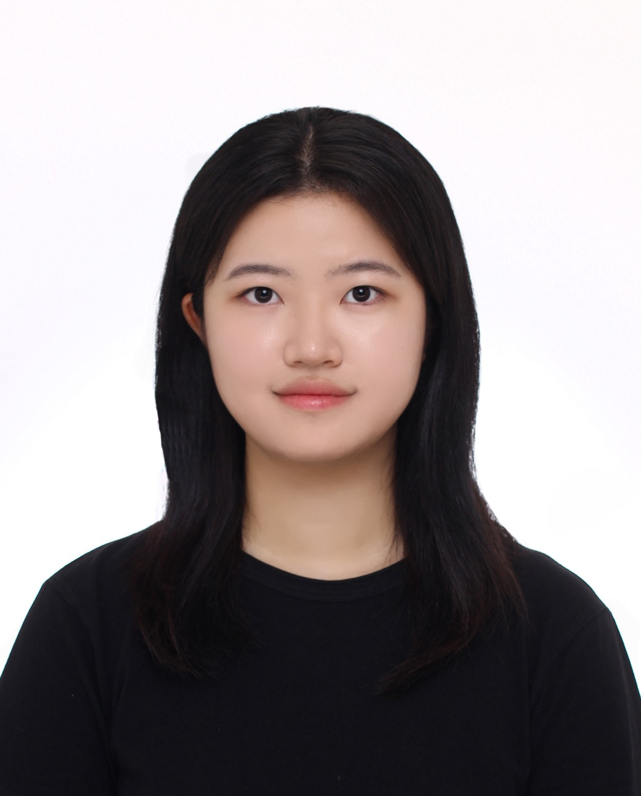

Research
Plant Leaf Disease Feature Disentanglement
Representation learning project focused on separating meaningful visual features for plant leaf disease analysis.
Personal website
I study biosystem engineering and AI system semiconductor engineering, with interests in agricultural AI, representation learning, embedded systems, and robotics.

About
I am an undergraduate student at Seoul National University majoring in Biosystem Engineering, with an interdisciplinary major in System Semiconductor Engineering for AI. I am interested in applying machine learning, embedded systems, and robotics to real-world agricultural and biological problems.
Selected work
Research
Representation learning project focused on separating meaningful visual features for plant leaf disease analysis.
AI
Explored memory-related ideas for large language models and how stored context can support more useful AI systems.
Robotics
Designed an AI-based irrigation system using Raspberry Pi and temperature, humidity, and soil sensors for environmental control.
Robotics
Worked on autonomous navigation for curved orchard paths and contributed to camera and LiDAR-based fruit detection with YOLO.
CV
My CV includes education, research experience, robotics projects, mentoring activity, exchange study, skills, and certifications.
Open CV PDFCourses
Contact
I am open to conversations about research, coursework, robotics, agricultural AI, and collaborative projects.
AI Usage
Tool
Used to apply the uploaded design file, reduce the profile image size, and revise the page using CV content.
Prompt
"Read my CV, reflect my information on the website, and adjust the profile image size."